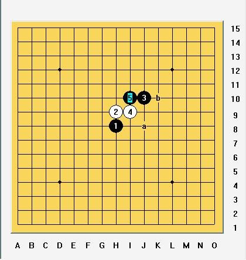

2009炫飞家族精英赛实战对局评论(一)
#1 2009炫飞家族精英赛实战对局评论(一) 作者：炫飞冰弦 发表时间：2009-2-25 21:43:22

关于这个疏星黑 5. 我不知道现在的研究是如何的，谈谈自己通过实战一点不成熟的看法吧。
黑 5 落下，以下白<
#2 Re:2009炫飞家族精英赛实战对局评论(一) 作者：流逝 发表时间：2009-2-27 9:06:38
这个变化27先把30那里冲了当时我没算到杀呢